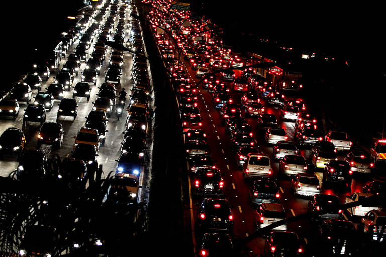

Mobilidade Urbana
Desenvolvimento de um sistema para controle de tráfego em meios urbanos
Controle de tráfego em meios urbanos
As cidades enfrentam desafios crescentes no gerenciamento do tráfego urbano devido ao aumento do número de veículos e ao crescimento populacional. O controle eficiente do tráfego é fundamental para melhorar a mobilidade, reduzir a poluição e garantir a segurança dos pedestres e motoristas.
Tecnologias no controle de tráfego
Algumas tecnologias podem ser aplicadas no controle de tráfego urbano para otimizar a fluidez do trânsito e melhorar a experiência dos usuários:
- Sistemas inteligentes de semáforos que se adaptam em tempo real ao fluxo de veículos.
- Monitoramento e análise de tráfego através de câmeras e sensores.
- Aplicativos e plataformas de informação em tempo real para motoristas e passageiros.
- Integração de sistemas de transporte público e privado para otimizar rotas e horários.
Benefícios do controle de tráfego eficiente
Um sistema eficiente de controle de tráfego em meios urbanos pode trazer diversos benefícios para a cidade e seus habitantes:
- Redução do tempo de deslocamento e melhoria da qualidade de vida dos cidadãos.
- Diminuição de congestionamentos e aumento da eficiência no uso das vias urbanas.
- Redução das emissões de poluentes e gases de efeito estufa, contribuindo para a sustentabilidade ambiental.
- Estímulo ao uso de modais de transporte alternativos, como o transporte público e a bicicleta.
- Melhoria na segurança viária, reduzindo acidentes e conflitos no trânsito.
Parcerias e colaborações
Para implementar soluções eficientes de controle de tráfego em meios urbanos, é crucial a colaboração entre governos, empresas, universidades e cidadãos. Juntos, podemos criar cidades mais inteligentes, sustentáveis e acessíveis para todos.